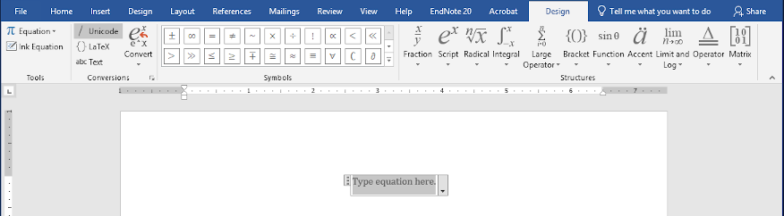
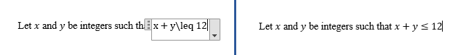
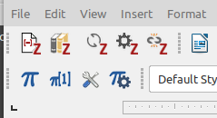
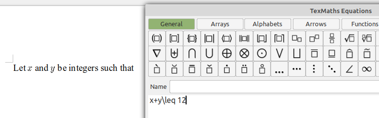
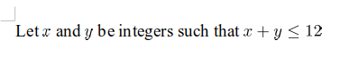

Your work in this class should be neat and properly formatted. As an upper-level computer science student your work should not only be technical correct, but should be presented professionally. Mathematical writing has rules that should be followed regarding formatting, and you should not just type things up as text. Here is an example of actual student work as typed up by a student in a previous semester:
Define final payoff P, where task i has payoff ti, task i has deadline di, the start day is S, ti is scheduled at si, also define a Boolean for whether the task i is scheduled bi.
We want to maximize P = sum of(ti*bi).
Here is what it should have looked like:
Define final payoff \(P\), where task \(i\) has payoff \(t_i\), task \(i\) has deadline \(d_i\), the start day is \(S\), \(t_i\) is scheduled at \(s_i\), and also define a Boolean for whether the task \(i\) is scheduled \(b_i\).
We want to maximize \(P=\sum t_i\cdot b_i\).
Notice that all variables are in a special “math italics” font, subscripts are properly used, and notation for a summation is used. These are all very important! Remember: Mathematics, including variables and formulas, is not English text, and should not just be typed as if it were. Every time a variable or formula appears, it should be set using mathematics formatting.
The “gold standard” for writing mathematics is LaTeX, which I’ll describe below. There are other options as well, but taking a little bit of time to learn LaTeX will allow you to create the absolute best looking mathematical writing. Both the LaTeX software and easy-to-use websites with LaTeX support are free. The language used to write out mathematics has almost entirely standardized on LaTeX syntax now, so even if you don’t use LaTeX directly you can use that same format in Microsoft Word, LibreOffice, or even in Markdown/MathJAX (which I’m using for this web page), so it’s worth your while to learn the syntax! More on individual systems is below.
The quickest, and for some people the most natural, way to write neat mathematics is by hand. You can do that in this class if you choose, but you must write neatly! You can write using a tablet and stylus, or you can write on paper and scan your solutions. It’s possible to use a cellphone camera to produce a “scanned” version, but you must use “scan to PDF” app to produce a proper and readable PDF document. No matter how you produce this, you need to submit it as a PDF document.
Writing documents with LaTeX is fundamentally different from using a word processor. Word processors like Word or LibreOffice are referred to as WYSIWYG editors, which stands for “What You See Is What You Get” – as you type, you see the text formatted on the screen just like it will appear in printed form. LaTeX works more like writing code, where you write “sourcecode” and then “compile” that into the final typeset document. This has some advantages as far as how LaTeX can do formatting (which is why LaTeX documents often look much nicer than, for example, Microsoft Word documents), but also can be challenging when it comes to getting the formatting just right.
The traditional way to use LaTeX is with a locally-installed version of the software. However, this requires installing the software and appropriate fonts on your computer, figuring out how to coordinate use of a text editor with the LaTeX processing software, etc. A much easier solution that many students use these days is to create a free account at Overleaf, which gives a web-based interface for creating LaTeX documents. With Overleaf there is no software to install, and everything is together in one web browser window. You still need to do the “compile” step each time you want to see how your document looks, but that’s previewed right in your browser as well. Once you have completed your document, you can download a PDF for submission.
The core idea with LaTeX is that text and math are different, and have different modes for typesetting. When mathematics appears in the middle of a regular text paragraph, you surround the math with dollar signs to indicate that it is math. You should do this even when the math is otherwise regular letters, such as variable names. For instance, the following LaTeX sourcecode is what you’d type for defining variables and a bound on them:
Let $x$ and $y$ be integers such that $x+y\leq 12$.After typesetting, your document will look like this, with appropriate mathematics fonts and symbols:
Let \(x\) and \(y\) be integers such that \(x+y\leq 12\).
The dollar signs above are for in-line equations, in a paragraph of text for example. LaTeX also supports “display mode” which is used for putting a formula on a line by itself, in which case it uses slightly larger formatting, but it can look nicer than trying to cram it all on a normal line height. To use display mode, you put the equation by itself (not in a paragraph) and surround it by either double-dollar signs or \[ and \]. You can also automatically number formulas by using the \begin{equation} and \end{equation} markup – for more details see the tutorial linked below. For a quick comparison of in-line typesetting versus display mode, consider \(\sum_{i=1}^n i\) versus \[\sum_{i=1}^n i\] (that’s the exact same LaTeX formula, just typeset two ways).
Getting started with LaTeX is pretty simple, but it is so powerful that it can take a long time to master. Just be patient, and if you can’t figure out how to do something you can always ask me. Here are two final resources to get you started:
A LaTeX tutorial - this is pretty extensive, but you can be pretty competent once you go through lesson 4 (I’d suggest adding lesson 17 too).
The \leq above is a special named symbol, and there are a lot of these in LaTeX. I use this cheatsheet although that only has the most common symbols.
Originally, Microsoft Word was really focused on writing non-mathematical documents, and math support was weak. Microsoft did include an “equation editor” which was difficult to use, and the result didn’t look nearly as good as LaTeX-typeset mathematics. Fortunately, that has changed, and you can make attractive mathematical documents with Word now. In fact, in recent versions Microsoft now supports the basic LaTeX equation language inside Word! Most serious math writers still use LaTeX, but if you only need to include math occasionally this is a decent option. I’ll give the basics below, and more documentation is available from Microsoft.
The key to writing math in Word is entering the “equation editor” which you bring up by typing Alt-=. When you do this, the equation tool will appear in the UI ribbon at the top, and should look something like this:

When you type now, it will go in the box shown as “Type equation here,” and the syntax you use depends on the selection at the top – notice that it says “Unicode” now, which is the “old style” equation editor. You also click on GUI buttons to create formulas, but that really is a horrifically inefficient way to write formulas. The better option in recent systems is to select “{}Latex” mode, after which you can simply enter an equation in LaTeX, typeset it by pressing Ctrl-= (or Enter), and it will be inserted into your Word document. This takes a little practice, but once you get the hang of it it’s much faster than clicking on formula pieces in the GUI. For example, when typing the final inequality it would look like the screenshot on the left below, and after finishing it will be formatted into what is shown in the screenshot on the right.

Like LaTeX, Word supports in-line (“linear”) and display-mode formatting, and it is generally smart enough to tell what you want (e.g., if you bring up the equation editor on a new line, it will assume display mode). If you want to change the formatting mode, you can use the “Convert” menu in the ribbon or in the dropdown from the equation box.
That’s all you need to know to get started writing math in Word. You’ll learn more by experimenting and going through Microsoft’s documentation.
LibreOffice is a free and open source office suite that is cross platform (so in particular, it works in Linux while Microsoft Office does not). If you work on multiple operating systems, or just don’t want to deal with software licensing and cost hassles, LibreOffice is an excellent option. Unfortunately, writing math in LibreOffice is a little more of a hassle than even Microsoft Word’s equation editor. It can be done though, and I recommend adding the TexMaths extension to make it a little more powerful. Once you do that, you can set it up to include these GUI buttons:

The button labeled with the “pi” opens the basic TexMaths equation editor, which opens in a new window. You can also define a keyboard shortcut for this – LibreOffice is very customizable, even if not the most user-friendly at times. Here’s what it looks like when typing the example that we used above:

As with Microsoft Word, you can create formulas by clicking on the various GUI buttons, but it’s must faster to use LaTeX syntax so you can just type. Once you have finished entering the formula, click the “LaTeX” button in the editor (or type Alt-L) to get this result:

In this document, you learned about different ways to prepare mathematics documents that are properly formatted and professional. This is a basic expectation in the Algorithms class, so pick a method and produce professional-looking documents! Overall, I’d recommend LaTeX, probably using Overleaf, but the final choice is up to you.